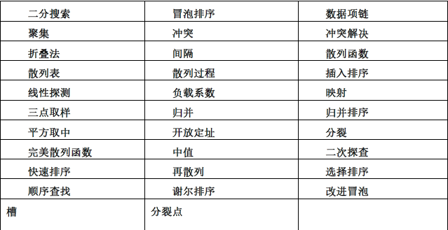

冒泡排序
- 第一次遍历
要比较相邻的两项，并且交换顺序排错的项
每对列表实行一次遍历，就有一个最大项排在了正确的位置。
如果列表有n项，第一次遍历就要比较n-1对数据。

- 第二次遍历
第二次遍历开始时，最大的数据项已经归位。现在还剩n-1个待排数据项，即有n-2个要比较的数据对。
- 交换（swap）
Python中的交换操作与其他许多编程语言不同。通常来说，交换列表中的两项需要一个暂存位置（一个附加的储存空间）。以上这段代码可以交换列表中的第i项和第j项。如果没有暂存位置的话，其中一个值就会被覆盖。
temp = alist[i]
alist[i] = alist[j]
alist[j] = temp
但是在Python里，可以“同时赋值”。通过“a,b=b,a”的语句就可以让两个赋值语句同时进行（如图2）

- 冒泡排序完整代码
def bubbleSort(alist)
for passnum in range(len(alist) - 1, 0, -1):
for i in range(passnum):
if alist[i] > alist[i + 1]:
temp = alist[i]
alist[i] = alist[i+1]
alist[i+1] = temp
- 冒泡排序改良（短路冒泡排序）
冒泡排序必须要在最终位置找到之前不断交换数据项，所以它经常被认为是最低效的排序方法
如果一个列表只需要几次遍历就可排好，冒泡排序就占有优势：它可以在发现列表已排好时立刻结束
def shortBubbleSort(alist):
exchanges = True
passnum = len(alist) - 1
while passnum > 0 and exchanges:
exchanges = False
for i in range(passnum):
if alist[i] > alist[i+1]:
exchange = True
temp = alist[i]
alist = alist[i+1]
alist[i+1] = temp
passnum = passnum - 1
选择排序
- 每遍历一次列表只交换一次数据，提高了冒泡排序的性能
- 找到最大的项，完成遍历后，再把它换到正确的位置

def selectionSort(alist):
for fillslot in range(len(alist)-1, 0, -1):
postionOfMax = 0
for location in range(1, fillslot+1):
if alist[location] > alist[positionOfMax]:
positionOfMax = location
temp = alist[fillslot]
alist[fillslot] = alist[positionOfMax]
alist[positionOfMax] = temp
插入排序
- 插入排序的算法复杂度仍然是O(n2)
- 总是保持一个位置靠前的已排好的子表，然后每一个新的数据项被“插入”到前边的子表里，排好的子表增加一项。

- 比较时，我们把之前已经排好的列表中比这个数据大的移到它的右边。
了第五步排序的过程。程序运行到当前位置，已排好的子表中包含了“17，26，54，77，93”五个数据。我们想让31插入该子表中。第一次，31和93比较，93要移到31右边。同理，77和54也要移位。遇到26时，移动步骤停止，31被插入到此处。此时我们就有了一个含6个数据项的已排好的子表。
- 关于“转移”与“交换”操作的考虑也很重要。通常情况下，“转移”的步骤约为“交换”步骤的1/3，因为它只有一次赋值操作。
def insertionSort(alist):
for index in range(1, len(alist)):
currentvalue = alist[index]
position = index
while position > 0 and alist[position-1] > currentvalue:
alist[position] = alist[position-1]
position = position - 1
alist[position] = currentvalue
希尔排序
- 将原来要排序的列表划分为一些子列表，再对每一个子列表执行插入排序，从而实现对插入排序性能的改进。
- 确定一个划分列表的增量“i”，这个i更准确地说，是划分的间隔

图 5.6 以3为间隔的希尔排序

- 最终以1为间隔进行插入排序，即标准的插入排序的过程。
def shellSort(alist):
sublistcount = len(alist)//2
while sublistcount > 0:
for startpostion in range(sublistcount):
gapInsetionSort(alist, startposition, sublistcount)
print("After increments of size",sublistcount, "The list is",alist)
sublistcount = sublistcount // 2
def gapInsertionSort(alist,start,gap):
for i in range(start+gap,len(alist),gap):
currentvalue = alist[i]
position = i
while position>=gap and alist[position-gap]>currentvalue:
alist[position]=alist[position-gap]
position = position-gap
alist[position]=currentvalue
alist = [54,26,93,17,77,31,44,55,20]
shellSort(alist)
print(alist)
归并排序
分而治之的策略来改进排序算法的表现。我们要学的第一种算法就是归并排序。
。归并排序是一种递归算法，它持续地将一个列表分成两半。如果列表是空的或者只有一个元素，那么根据定义，它就被排序好了（最基本的情况）。如果列表里的元素超过一个，我们就把列表拆分，然后分别对两个部分调用递归排序。一旦这两个部分被排序好了，那么这种被叫做归并的最基本的操作，就被执行了。
快速排序
快速排序用了和归并排序一样分而治之的方法来获得同样的优势，但同时不需要使用额外的存储空间。经过权衡之后，我们发现列表不分离成两半是可能的，当这发生的时候，我们可以看到，操作减少了。
快速排序首先选择一个中值。虽然有很多不同的方法来选择这个数值，我们将会简单地选择列表里的第一项。中值的作用在于协助拆分这个列表。中值在最后排序好的列表里的实际位置，我们通常称之为分割点的，是用来把列表变成两个部分来随后分别调用快速排序函数的。